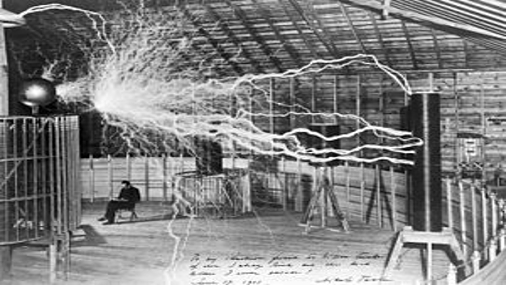

Godina: 1891.
Teslina zavojnica je električni rezonantni transformatorski krug koji je dizajnirao Nikola Tesla 1891. Koristi se za proizvodnju visokonaponske, nisko-strujne i visokofrekventne električne energije naizmjenične struje. Tesla je eksperimentirao s nizom različitih konfiguracija koje su se sastojale od dva, ili ponekad tri spojena rezonantna električna kruga. Tesla je koristio ove sklopove za provođenje inovativnih eksperimenata u električnoj rasvjeti, fosforescenciji, stvaranju X-zraka, pojavama izmjenične struje visoke frekvencije, elektroterapiji i prijenosu električne energije bez žica. Danas se zavojnice još uvijek koriste kao detektori curenja za sustave s visokim vakuumom. Pogrešno objašnjenje odsutnosti električnog udara koji se zadržao među hobistima Tesline zavojnice jest da struje visokih frekvencija putuju tijelom blizu površine i zbog toga ne prodiru u vitalne organe ili živce zbog elektromagnetskog fenomena zvanog "efekt kože" koji je kasnije opovrgnut.